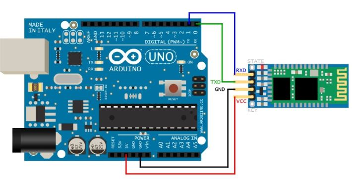

El Arduino es una placa basada en un microcontrolador ATMEL. Los microcontroladores son circuitos integrados en los que se pueden grabar instrucciones, las cuales las escribes con el lenguaje de programación que puedes utilizar en el entorno Arduino IDE. Estas instrucciones permiten crear programas que interactúan con los circuitos de la placa. El microcontrolador de Arduino posee lo que se llama una interfaz de entrada, que es una conexión en la que podemos conectar en la placa diferentes tipos de periféricos. La información de estos periféricos que conectes se trasladará al microcontrolador, el cual se encargará de procesar los datos que le lleguen a través de ellos. El tipo de periféricos que puedas utilizar para enviar datos al microcontrolador depende en gran medida de qué uso le estés pensando dar. Pueden ser cámaras para obtener imágenes, teclados para introducir datos, o diferentes tipos de sensores.
Arduino
Modelos de Arduino:
- Arduino Uno: El modelo más popular, ideal para principiantes.
- Arduino Mega: Ofrece más pines de entrada/salida y más memoria, adecuado para proyectos más complejos.
- Arduino Nano: Una versión más pequeña del Arduino Uno, perfecta para proyectos con espacio limitado.
- Arduino Leonardo:Capaz de emular un teclado o un ratón, ideal para proyectos de interacción con la computadora.


Pines y Conectores de Arduino:
Conocer los pines de Arduino es crucial porque son los puntos de conexión entre la placa y otros componentes electrónicos, permitiendo la interacción del microcontrolador con el entorno. Estos pines permiten conectar sensores, actuadores, pantallas, motores, y otros dispositivos, lo que amplía las capacidades del Arduino para proyectos diversos. Cada pin tiene funciones específicas, como recibir señales de entrada, enviar señales de salida, comunicarse con otros dispositivos a través de protocolos como I2C o SPI, y controlar el flujo de energía en el circuito. Por ejemplo, los pines analógicos permiten leer valores de sensores que varían en el tiempo, como la temperatura, mientras que los pines digitales se usan para encender o apagar dispositivos. El uso adecuado de los pines es esencial para evitar dañar la placa y asegurar el correcto funcionamiento del proyecto. Además, entender las capacidades y limitaciones de cada pin ayuda a optimizar el diseño del circuito, garantizando que se utilicen los pines más adecuados para cada función, lo que resulta en un proyecto más eficiente y robusto.
- 1. Pin Conector USB: Para empezar, este puerto tiene un fusible PPTC que protege la placa e impide que el consumo de corriente sea superior a 500mA, por lo que el consumo de la placa más las cargas conectadas a esta no podrán ser superiores a esta cifra.
- Conectar Arduino al ordenador y volcar el programa que hemos hecho en el IDE de Arduino.
- Alimentar la placa con 5 Vdc.
- 2. Pin Conector de alimentación JACK: Esta entrada de alimentación es para alimentar la placa entre 7 y 12 voltios en corriente continua.
Protecciones:
- Protección contra inversión de polaridad.
- Regulador de tensión que maneja una caída de tensión.
- 3. Pines Vin y GND: El pin Vin se comporta como entrada o salida de tensión y GND es el potencial cero voltios o negativo de la alimentación.
- 4. Pin 5v: Este pin también tiene doble función. Cuando se alimenta por el USB o el Jack, proporciona una tensión regulada de 5 Vdc.
- 5. Pin 3.3v: Este pin proporciona una tensión de salida de 3.3 Vdc y una corriente máxima de 60mA.
- 6. Pin Reset: Conector del botón de reset para reinicializar el microcontrolador.
- 7. IOREF: Proporciona la tensión de referencia de trabajo de la placa (5V en Arduino Uno).
- 8. No conectado: Este pin no está conectado en Arduino Uno.
- 9. Botón de reset Este botón reinicializa el microcontrolador.
- 10. Entradas analógicas A0….A5: Convertidor analógico-digital con 10 bits de resolución, permitiendo hasta 1024 valores.
- 11. Pin AREF: Referencia analógica para entradas analógicas.
- 12. Pines entradas y salidas digitales 0….13: Usados para señales de 0V (LOW) o 5V (HIGH).
- 13. Pines 0 (RX) y 1 (TX): Comunicación serial, usados durante la programación del microcontrolador.
- 14. SDA y SCL: Pines de comunicación I2C para conectar dispositivos como sensores y pantallas LCD.
- 15. Comunicación SPI: Usa pines específicos para la comunicación serie con otros dispositivos.
- 16. GND: Todos los pines marcados como GND son el negativo o masa.
- 17. Pines ICSP Atmega328: Programación serie en circuito para cargar el bootloader o programar Arduino.
- 18. Pines ICSP Atmega16U2: Para programar el chip Atmega16U2, que actúa como interfaz entre el puerto USB y el microcontrolador principal.
Funciones del conector USB: